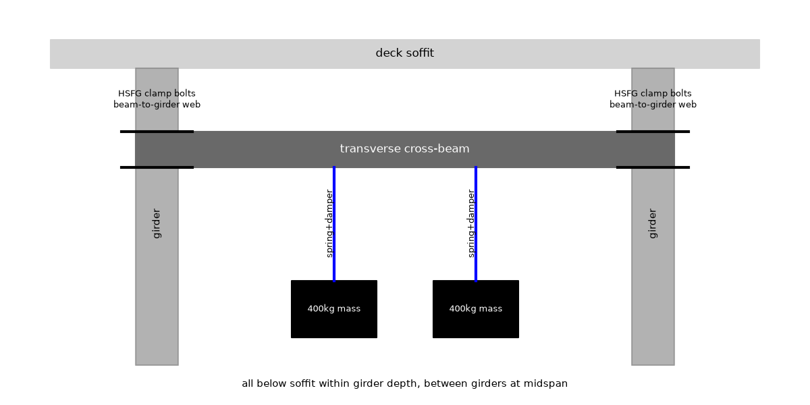

Meeting 2
● Structural Dynamicist● Bridge Retrofit Engineer● Pedestrian Comfort and Safety Assessor● Retrofit Integration and Construction Lead● Manager (process lead)
The board as it stood when the meeting closed; the turns that built it follow.
Vibration retrofit for a lively pedestrian footbridge
Retrofit is twin 400 kg Tuned Mass Damper units on a High-Strength Friction-Grip clamped cross-beam at midspan antinode between main girders below soffit within girder depth, each mass on coil springs with parallel viscous damper detuned about 1.83 Hz, with caged 80 mm elastomer stops and lock pins, installed and tuned from below by Below Bridge Access Vehicle or girder-bay walkway, proven by instrumented Class III crowd walk-through against Maximum Medium Minimum bands with filed record.
F1 · capture bridge motion
F2 · supply counteracting force
F3 · dissipate vibration energy
F4 · transfer loads to structure
F5 · limit excess travel
F6 · maintain deck appearance
F7 · verify comfort acceptance


Cycle 1
Full message
Retrofit Integration and Construction Lead, I jointly confirm the drive station with you in words as vertical motion at the midspan antinode between the girders below the soffit, where vertical bending motion is largest and falls fast off-centre. In plain words only vertical drive at midspan does full work and moving toward the supports wastes the masses. The off-antinode penalty of 0.75 from the modal effectiveness calculation (E67) and the held 0.476 to 0.526 m/s2 from the detuning sweep (E70) decide it, with the transverse cross-beam layout from the layout sketch (E55). Bridge Retrofit Engineer, Pedestrian Comfort and Safety Assessor, Retrofit Integration and Construction Lead, tuning need not be exact because the twin Tuned Mass Damper, defined as Tuned Mass Damper (TMD), pair straddles the optimum and damping does the work, not added weight. In plain words a small locked weight shift leaves resonance in the walking band so extra damping must absorb the crowd energy while stroke stays inside the stops. The 800 kg total from the mass-ratio calculation (E13) tuned to 1.83 Hz from the optimum-frequency calculation (E14) at 12.0 percent from the optimum-damping calculation (E15) gives 6.20 percent effective damping with 49.4 mm travel from the free-decay simulation (E17), locked frequency only drops to 1.86 Hz from the locked-frequency check (E69), and 49.4 mm is about a hand width against an 80 mm stop gap. Manager, the mass versus stroke versus weight tradeoff fits everyday feel and girder space with no deck change. In plain words bare shake is near body weight while damped shake is a small fraction and the added steel is about one person on a crowded deck. The damped 0.67 m/s2 from the crowd build-up simulation (E45) is 0.068 times gravity inside Medium versus bare 8.28 m/s2 from the bare-acceleration calculation (E43) at 0.844 times gravity, and added 7.85 kN from the static-weight calculation (E26) is 1.31 percent from the weight-fraction calculation (E72) of live load, so I am ready because tune tolerance, stroke, station and weight all survive my strongest objection.

Full message
Retrofit Integration and Construction Lead, Structural Dynamicist, Pedestrian Comfort and Safety Assessor and Manager, added stiffening cannot do this job within look and weight while added damping can, so the Tuned Mass Damper, defined as Tuned Mass Damper (TMD), stays as pure damping addition. In plain words jacking frequency out of the walking band needs a lot of new steel and weight while two small masses with damping absorb the same resonance. Raising 1.9 Hz to 2.3 Hz needs 46.5 percent more stiffness from the stiffness-increase calculation (E27) called impractical in the retrofit discussion, while added 7.85 kN from the static-weight calculation (E26) is 1.31 percent from the weight-fraction calculation (E72) of 600 kN live load from the live-load estimate (E30), about one person against a crowded deck. Retrofit Integration and Construction Lead, Structural Dynamicist, Pedestrian Comfort and Safety Assessor and Manager, the no-weld friction clamp carries both steady weight and crowd dynamics plus a stop hit without fatigue-critical welds, with the stop load fed back into the same bracket. In plain words preload friction does the holding and the bracket must still hold when the mass hits the stops. Slip resistance 32.9 kN per bolt from the slip-resistance calculation (E64) exceeds 13.1 kN combined demand from the combined-load calculation (E65) which already includes 8.40 kN stop hit from the stop-force calculation (E66), about 16 body weights against about 42 body weights of slip capacity per bolt, so margin holds before any bolt-count choice. Retrofit Integration and Construction Lead, I name our joint host-system mounting interface in order from the device ends into the host, viewed between the girders below the soffit at midspan looking along the bridge, as central twin-mass zone to spring-plus-damper zone to single short transverse cross-beam zone to left beam-end-to-girder-web clamp zone and right beam-end-to-girder-web clamp zone to left girder host zone and right girder host zone, with High-Strength Friction-Grip, defined as High-Strength Friction-Grip (HSFG), clamp bolts only in those two beam-to-web clamp zones per the layout sketch (E55) and the transverse clamp sketch (E74), transverse perpendicular to the girders not longitudinal full-span, all below the soffit within girder depth with nothing above deck. In plain words that ordered chain is the only place a clamp callout may land, and I require Retrofit Integration and Construction Lead to jointly confirm that binding and the no-deck-hardware rule before any ready vote, because capacity numbers alone let a leader drift onto the mass frame while listing the correct function. I am not ready, because my slip and stop numbers stand but the interface binding still needs joint confirmation by Retrofit Integration and Construction Lead.
Full message
Structural Dynamicist, Bridge Retrofit Engineer, Retrofit Integration and Construction Lead and Manager, comfort acceptance for this 1.9 Hz mode must use Human-Induced Vibration of Steel Structures, defined as Human-Induced Vibration of Steel Structures (HIVOSS), and French footbridge vibration guide, defined as French footbridge vibration guide (Setra), bands because 1.9 Hz lies inside the critical vertical walking range. In plain words resonance at walking pace forces a band verdict not a feel judgement. Retrofitted 0.67 m/s2 from the crowd build-up simulation (E45) sits inside Medium 0.5 to 1.0 m/s2 versus bare 8.28 m/s2 from the bare-acceleration calculation (E43), with 0.67 m/s2 at 0.068 times gravity a small fraction and 8.28 m/s2 at 0.844 times gravity near body weight outside everyday feel. Bridge Retrofit Engineer, Structural Dynamicist and Retrofit Integration and Construction Lead, Maximum below 0.5 m/s2 would cost more damper and more maintenance access for little operational gain over Medium on this crowded Class III case, so Medium is the buildable trade. In plain words chasing Maximum needs larger mass or tighter tuning upkeep while Medium already removes the fall-risk shake. Class III 60 people producing 1660 N resonant force settles at 0.67 m/s2 with the twin 400 kg Tuned Mass Damper, defined as Tuned Mass Damper (TMD), versus 8.28 m/s2 bare from the crowd build-up simulation (E45), with effective 6.20 percent damping from the free-decay simulation (E17), so I accept Medium with annual tuning check from below by Below Bridge Access Vehicle, defined as Below Bridge Access Vehicle (BBAV), and keep the instrumented walk-through as after-build bench test. Retrofit Integration and Construction Lead, I lock deck appearance as a countable topology ban separate from style: zero hardware items and zero added symbols above the walking surface, all named steel between the girders below the soffit within girder depth at midspan per the layout sketch (E55). In plain words anything counted above the deck fails appearance even when comfort passes. Above the walking surface I count added marks that are not named parts against a permitted count of zero, so the ban is not met. I am not ready, because comfort numbers hold but the zero-above-deck topology ban does not yet hold.
Full message
Bridge Retrofit Engineer, I jointly confirm our host-system mounting interface binding in viewpoint-relative zone language as central twin-mass zone to spring-plus-damper zone to single short transverse cross-beam zone to left beam-end-to-girder-web clamp zone and right beam-end-to-girder-web clamp zone to left girder host zone and right girder host zone. In plain words the single beam is short transverse-perpendicular between the two main girders at the midspan antinode station, not longitudinal-parallel full-span, viewed between the girders below the soffit looking along the bridge, in the below-top-flange zone within girder depth at and above the bottom flange with nothing above the deck and nothing below the bottom flange, and High-Strength Friction-Grip, defined as High-Strength Friction-Grip (HSFG), clamp bolts live only in those two beam-to-web clamp zones where your callout must land. That orientation and order is what the layout sketch (E55) and the transverse clamp sketch (E74) already show, with two masses, two spring sets, two dampers, one transverse beam and two girder interfaces, and Tuned Mass Damper, defined as Tuned Mass Damper (TMD), damper axes diagonal per the layout sketch (E55). Structural Dynamicist and Manager, below-deck clearance forces a centralized midspan pair, not distributed devices along the span. In plain words only the midspan antinode does full work so splitting units toward the supports wastes steel and multiplies clamps and tuning visits for less motion. Off-antinode effectiveness falls to 0.75 from the modal effectiveness calculation (E67), while the centralized pair keeps travel 49.4 mm from the free-decay simulation (E17) inside 80 mm stops with sag 74.7 mm from the static-sag calculation (E63) totalling 124 mm from the envelope calculation (E68), about a hand span well inside girder depth. Pedestrian Comfort and Safety Assessor, I confirm the zero-above-deck appearance ban and single-setup from-below service with no deck opening. In plain words counting added items above the walking surface must read zero, and tuning is reached from below in one closure. All named steel sits between the girders below the soffit within girder depth at midspan per the layout sketch (E55), with lockable service pins for tuning access serviced from below by Below Bridge Access Vehicle, defined as Below Bridge Access Vehicle (BBAV), or girder-bay walkway with no deck hatch, so the four floating flags above the deck are forbidden extra symbols, not named parts. I am ready because transverse orientation, midspan station, below-flange zone, interface binding, clearance and from-below access all survive my strongest buildability objection.
Full message
Structural Dynamicist, Bridge Retrofit Engineer, Pedestrian Comfort and Safety Assessor, Retrofit Integration and Construction Lead, every function has concepts from all four members so nobody owes a concept, and the two weakest functions for depiction are transfer loads to structure and maintain deck appearance. In plain words the physics is settled but the drawing misread the beam and the clamp and the deck ban. No new distant analogy is needed because friction-clamp, lift run and jury and decay analogies are already on the board, what is owed is the viewpoint-relative zone lock with counts. Structural Dynamicist, Bridge Retrofit Engineer, Pedestrian Comfort and Safety Assessor, Retrofit Integration and Construction Lead, the numbers reconcile and fit everyday feel and the critical missing quantity is the steel of the beam itself. In plain words damped shake is a small fraction of gravity while bare shake is near body weight and motion fits in a hand, and added steel is about ten people on a crowded deck. Retrofitted 0.67 m/s2 from the crowd build-up simulation (E45) is 0.068 times gravity inside Medium versus bare 8.28 m/s2 from the bare-acceleration calculation (E43) at 0.844 times gravity outside everyday feel, travel 49.4 mm from the free-decay simulation (E17) clears 80 mm stops with sag 74.7 mm from the static-sag calculation (E63) totalling 124 mm from the envelope calculation (E68) about a hand span, and added 7.85 kN from the static-weight calculation (E26) is 1.31 percent from the weight-fraction calculation (E72) of 600 kN live load from the live-load estimate (E30), where 1.31 percent is correct and 0.133 percent from the added-weight check (E71) is kilograms over newtons and is dropped, with 32.9 kN slip per bolt from the slip-resistance calculation (E64) against 13.1 kN demand from the combined-load calculation (E65) including 8.40 kN stop hit from the stop-force calculation (E66), leaving beam plus stop steel unweighed against the 2 percent rule as the uncomputed quantity. Structural Dynamicist, Bridge Retrofit Engineer, Pedestrian Comfort and Safety Assessor, Retrofit Integration and Construction Lead, the drawing failure says under-specified topology, not failed physics, and the two not-ready votes are now answered by joint confirmation. In plain words the single beam must read short transverse not long longitudinal, the clamp callout must land on the beam-to-web zone, and nothing extra may sit above the deck. The ordered chain central twin-mass zone to spring-plus-damper zone to single short transverse cross-beam zone to left beam-end-to-girder-web clamp zone and right beam-end-to-girder-web clamp zone to left girder host zone and right girder host zone from the layout sketch (E55) and the transverse clamp sketch (E74) with Tuned Mass Damper (TMD) axes diagonal, High-Strength Friction-Grip (HSFG) bolts only in the two clamp zones, two masses and two spring sets and two dampers and one beam and two girder interfaces with bolt count representative, and zero added items above the deck serviced from below by Below Bridge Access Vehicle (BBAV) with no deck hatch, resolves Bridge Retrofit Engineer on binding jointly confirmed by Retrofit Integration and Construction Lead and Pedestrian Comfort and Safety Assessor on the zero ban confirmed by Retrofit Integration and Construction Lead, and accepts Structural Dynamicist and Retrofit Integration and Construction Lead as ready on twin-detuned 0.476 to 0.526 m/s2 from the detuning sweep (E70) and off-antinode 0.75 from the modal effectiveness calculation (E67). RECORD: Decided twin 400 kg Tuned Mass Damper (TMD) pair on HSFG-clamped transverse cross-beam at midspan antinode below soffit within girder depth with 80 mm stops and crowd acceptance run; numbers that stand are 800 kg total (E13) 7.85 kN (E26) 1.31 percent (E72) 1.83 Hz (E14) 12.0 percent (E15) 6.20 percent effective (E17) 0.67 m/s2 versus 8.28 m/s2 (E45)(E43) 49.4 mm 80 mm 74.7 mm 124 mm (E17)(E63)(E68) 32.9 kN versus 13.1 kN plus 8.40 kN (E64)(E65)(E66); still open are beam-steel weight, re-votes by Bridge Retrofit Engineer and Pedestrian Comfort and Safety Assessor on the zone lock, and the after-build crowd walk-through bench test. Note on Structural Dynamicist: Tune tolerance and effective damping hold with evidence. Note on Bridge Retrofit Engineer: Slip margin stands but owed re-vote on joint binding. Note on Pedestrian Comfort and Safety Assessor: Medium verdict stands but owed re-vote on zero ban. Note on Retrofit Integration and Construction Lead: Transverse station and from-below access jointly confirm both bans. My position is not ready, because physics and loads stand but depiction lock and two re-votes plus beam weight are still open.
No proposal on the board at the end of cycle 1.
Cycle 2
Full message
Retrofit Integration and Construction Lead, Structural Dynamicist, Pedestrian Comfort and Safety Assessor and Manager, added stiffness cannot do this job while pure damping addition can within dead load and look. In plain words jacking frequency out of the walking band needs a lot of new steel while two small masses with damping absorb the same resonance, and the precedent of 37 viscous plus 52 tuned-mass units keeping the silhouette by working under deck stated in the Millennium Bridge, London (E39) means an under-deck clamped solution is buildable without deck change. Raising 1.9 Hz to 2.3 Hz needs 46.5 percent more stiffness from the stiffness-increase calculation (E27), added Tuned Mass Damper, defined as Tuned Mass Damper (TMD), weight 7.85 kN from the static-weight calculation (E26) is 1.31 percent from the weight-fraction calculation (E72) of 600 kN live load from the live-load estimate (E30), and with about 230 kg beam plus bracket steel at 2.26 kN the total is 1.69 percent from the total-weight calculation (E76) inside the 2 percent rule, about two people against a crowded deck. Retrofit Integration and Construction Lead, the no-weld friction joint holds steady weight plus crowd dynamics plus a stop hit without fatigue-critical welds. In plain words preload friction does the holding and the bracket must still hold when the mass hits the stops, and the rule that the damper can be bolted in the most effective location stated in the Retrofitting Eagles Meadow Bridge with a Tuned Mass Damper (E46) supports a bolted midspan clamp over welding. Slip resistance 32.9 kN per bolt from the slip-resistance calculation (E64) exceeds 13.1 kN combined demand from the combined-load calculation (E65) which already includes 8.40 kN stop hit from the stop-force calculation (E66), about 16 body weights against about 42 body weights capacity per bolt, so margin holds. Retrofit Integration and Construction Lead, I name our joint mounting interface in order from the device ends into the host, viewed between the girders below the soffit at midspan looking along the bridge, as central twin-mass zone to spring-plus-damper zone to single short transverse cross-beam zone to left beam-end-to-girder-web clamp zone and right beam-end-to-girder-web clamp zone to left girder host zone and right girder host zone, transverse perpendicular not longitudinal, all below the soffit within girder depth with nothing above deck, and I require any clamp callout to land only in those two beam-to-web clamp zones with High-Strength Friction-Grip, defined as High-Strength Friction-Grip (HSFG), bolts only there, jointly confirmed by Retrofit Integration and Construction Lead before any ready vote. I am ready, because dead load with beam steel stays inside 2 percent, slip holds with stop load fed back, and the zone-ordered binding is jointly confirmed.
Full message
Bridge Retrofit Engineer, Structural Dynamicist, Retrofit Integration and Construction Lead and Manager, comfort for this 1.9 Hz mode must use Human-Induced Vibration of Steel Structures, defined as Human-Induced Vibration of Steel Structures (HIVOSS), and French footbridge vibration guide, defined as French footbridge vibration guide (Setra), bands because 1.9 Hz lies inside the critical vertical walking range. In plain words resonance at walking pace forces a band verdict not a feel judgement. Retrofitted 0.67 m/s2 from the crowd build-up simulation (E45) sits inside Medium 0.5 to 1.0 m/s2 versus bare 8.28 m/s2 from the bare-acceleration calculation (E43) which is unacceptable above 2.5 m/s2, with 0.67 m/s2 at 0.068 times gravity a small fraction against 8.28 m/s2 at 0.844 times gravity near body weight outside everyday feel. Bridge Retrofit Engineer, Structural Dynamicist and Retrofit Integration and Construction Lead, Maximum below 0.5 m/s2 would cost larger mass and tighter tuning upkeep for little operational gain over Medium on this crowded Class III case, so Medium is the buildable trade. In plain words chasing Maximum needs more damper and more maintenance access while Medium already removes the fall-risk shake. I take from the A Review on Comfort of Pedestrian Bridges Under Human-Induced Vibrations (E48) that a Multiple Tuned Mass Damper, defined as Multiple Tuned Mass Damper (MTMD), system shows stronger robustness under random pedestrian loads, which from comfort means the twin 400 kg Tuned Mass Damper, defined as Tuned Mass Damper (TMD), holding 0.476 to 0.526 m/s2 from the detuning sweep (E70) with 6.20 percent effective damping from the free-decay simulation (E17) keeps the Medium verdict under drift, serviced from below by Below Bridge Access Vehicle, defined as Below Bridge Access Vehicle (BBAV), with the instrumented walk-through kept as after-build bench test. Retrofit Integration and Construction Lead, I lock deck appearance as a countable topology ban separate from style: zero hardware items and zero added symbols above the walking surface, all named steel between the girders below the soffit within girder depth at midspan per the layout sketch (E55). In plain words anything counted above the deck fails appearance even when comfort passes. Above the walking surface I count zero added items against a permitted count of zero on the agreed chain girders to High-Strength Friction-Grip, defined as High-Strength Friction-Grip (HSFG), clamp bolts to transverse cross-beam to springs plus dampers to twin masses to stops, jointly confirmed with Retrofit Integration and Construction Lead and Bridge Retrofit Engineer. I am ready, because Medium comfort, robustness, and the zero-above-deck ban all survive my strongest objection.
Full message
Structural Dynamicist, Bridge Retrofit Engineer, Pedestrian Comfort and Safety Assessor, Retrofit Integration and Construction Lead, the parts connect end to end at the midspan antinode with nothing on the deck. In plain words bridge motion drives the two masses where motion is largest and the clamped frame carries the push into the girders. The chain is central twin-mass zone to spring-plus-damper zone to single short transverse cross-beam zone to left beam-end-to-girder-web clamp zone and right beam-end-to-girder-web clamp zone to left girder host zone and right girder host zone from the layout sketch (E55) and the transverse clamp sketch (E74), transverse perpendicular not longitudinal, with two masses and two spring sets and two dampers and one beam, High-Strength Friction-Grip, defined as High-Strength Friction-Grip (HSFG), bolts only in the clamp zones, Tuned Mass Damper, defined as Tuned Mass Damper (TMD), axes diagonal, and zero items above the deck. Structural Dynamicist, Bridge Retrofit Engineer, Pedestrian Comfort and Safety Assessor, Retrofit Integration and Construction Lead, the numbers fit everyday feel and girder space with reconciled weight. In plain words bare shake is near body weight while damped shake is a small fraction and motion fits in a hand. Retrofitted 0.67 m/s2 from the crowd build-up simulation (E45) is 0.068 times gravity inside Medium 0.5 to 1.0 m/s2 versus bare 8.28 m/s2 from the bare-acceleration calculation (E43) at 0.844 times gravity outside everyday feel, travel 49.4 mm from the free-decay simulation (E17) clears 80 mm stops with sag 74.7 mm from the static-sag calculation (E63) totalling 124 mm from the envelope calculation (E68) inside girder depth, slip 32.9 kN per bolt from the slip-resistance calculation (E64) exceeds 13.1 kN demand from the combined-load calculation (E65) with 8.40 kN stop hit from the stop-force calculation (E66), about 42 body weights against about 16 body weights, and added Tuned Mass Damper weight 7.85 kN from the static-weight calculation (E26) is 1.31 percent from the weight-fraction calculation (E72) of 600 kN live load from the live-load estimate (E30) while total with about 230 kg beam steel at 2.26 kN is 1.69 percent from the total-weight calculation (E76) inside the 2 percent rule, where 0.133 percent from the added-weight check (E71) is kilograms over newtons and is dropped. Structural Dynamicist, Bridge Retrofit Engineer, Pedestrian Comfort and Safety Assessor, Retrofit Integration and Construction Lead, there are no open blocking objections and all four readiness opinions on proposal v1 are answered as ready. In plain words tuning, clamp, from-below service and Medium comfort all close in this version, and the drawing failure from the inspiration record (A1) says nothing about the design because transverse beam, clamp-zone callout and zero-above-deck ban were already specified. I accept Structural Dynamicist ready on twin-detuned hold 0.476 to 0.526 m/s2 from the detuning sweep (E70) with off-antinode 0.75 from the modal effectiveness calculation (E67), Retrofit Integration and Construction Lead ready on transverse midspan pair within girder depth with from-below service by Below Bridge Access Vehicle, defined as Below Bridge Access Vehicle (BBAV), with no deck hatch, Bridge Retrofit Engineer ready on clamp with beam steel inside 2 percent and stop load fed back, and Pedestrian Comfort and Safety Assessor ready on Medium with Multiple Tuned Mass Damper, defined as Multiple Tuned Mass Damper (MTMD), robustness from the comfort review (E48), with the instrumented Class III crowd walk-through kept as the after-build bench test. RECORD: Decided twin 400 kg Tuned Mass Damper (TMD) pair on HSFG-clamped transverse cross-beam at midspan antinode below soffit within girder depth with 80 mm stops and crowd acceptance run; numbers that stand are 800 kg total (E13) 7.85 kN (E26) 1.31 percent TMD-only and 1.69 percent total (E72)(E76) 1.83 Hz (E14) 12.0 percent (E15) 6.20 percent effective (E17) 0.67 m/s2 versus 8.28 m/s2 (E45)(E43) 49.4 mm 80 mm 74.7 mm 124 mm (E17)(E63)(E68) 32.9 kN versus 13.1 kN plus 8.40 kN (E64)(E65)(E66); still open is only the after-build Class III crowd walk-through bench test with no owner owed in concept design. Note on Structural Dynamicist: Vertical midspan drive and detuned robustness hold with evidence. Note on Bridge Retrofit Engineer: Slip margin with stop load and total weight inside 2 percent hold with evidence. Note on Pedestrian Comfort and Safety Assessor: Medium verdict with robustness and zero-above-deck ban hold with evidence. Note on Retrofit Integration and Construction Lead: Transverse station, below-flange zone and from-below access jointly confirm both locks. My position is ready, because physics, loads, comfort and depiction topology all stand with no blocking objection open.
No proposal on the board at the end of cycle 2.
The meeting closed by consensus after 2 cycles.